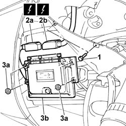

1060G80 Diesel electronic injection system CONTROL UNIT - R.R.
- Path
- Procedures > 10 ENGINE > 1060 DIESEL FUEL INJECTION SYSTEM > 1060G DIESEL INJECTION PRESSURE PUMP ELECTRONIC CONTROL > 1060G80 Diesel electronic injection system CONTROL UNIT - R.R.
- Kind
- repair procedure (removal / refitting; the operation number is the code)
- Applies to
- engines: 2.4 JTD 10V; all production periods
- Interactive page
- https://sloeber94.github.io/elrnDB-lThss/en/#/100728
Applies to: all engines; all production periods
 Removing
Removing
 Refitting
Refitting1. Undo the bolts fixing the left front wheel arch liner.
2. Disconnect the two electrical connections (2a) and (2b) from the engine management control unit.
3. Undo the fixing nuts (3a) and remove the engine management control unit (3b).
 | Description | Connector |
|---|---|---|
2a | Engine management control unit | M010A |
| Description | Connector |
|---|---|---|
2b | Engine management control unit | M010B |

Applies to: all engines; all production periods
Refitting
Removing- Fit the engine management control unit in the housing in the bodyshell and tighten the fixing nuts to torque.
- Connect the electrical connections for the engine management control unit.
| Description | Connector |
|---|---|---|
. | Engine management control unit | M010A |
| Description | Connector |
|---|---|---|
. | Engine management control unit | M010B |
- Tighten the bolts fixing the left wheel arch liner to the front bumper.